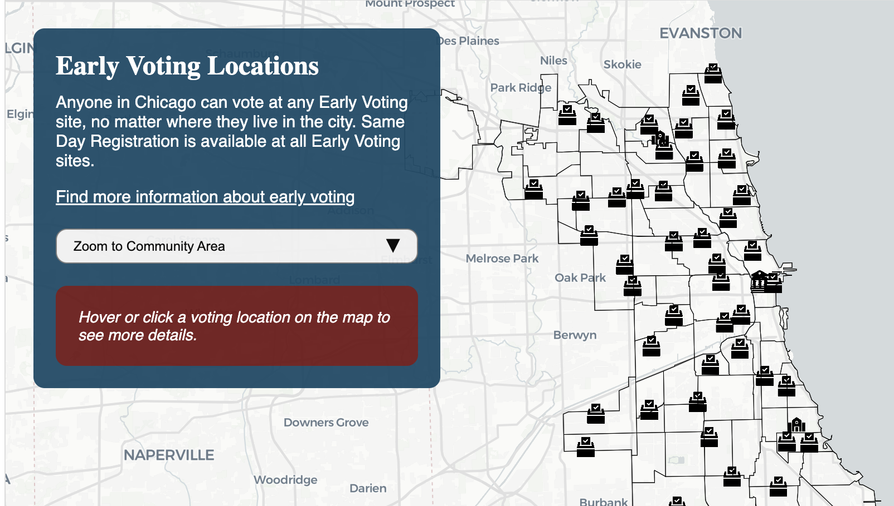

Stories

A Neighborhood Institution: How the University of Chicago Built a “Compatible Community”
Mapping over a century of the University of Chicago’s expanding property footprint in Hyde Park and the surrounding neighborhoods.

CTA says bus service is back to prepandemic levels. A new analysis shows which neighborhoods were slowest to get service back.
Worked on the analysis and visualizations used in this story in the Chicago Tribune.

Exploring AI Use In Government
In 2023, the Biden Administration released the first ever Federal AI Use Case Inventory. See how the federal government is using AI.

Find a Chicago Early Voting Location
A map of all 56 Early Voting locations in Chicago.

University Faculty Aren’t Neutral When It Comes to Political Donations
A data journalism piece for The Chicago Maroon.

Three Years Later, What Have We Learned from the UChicago Common Data Set?
A data journalism piece for The Chicago Maroon.

My Reading Over the Years
A personal exploration of my reading over the last 8 years.

My Daily Devotion: The NYT Daily Mini Crossword
A person exploration of my NYT Daily Mini Crossword times.

StopWatch:
Exploring Bus Service in Chicago
Exploring Bus Service in Chicago
Built a web app as part of a research project that analyzed a unique dataset of over 100 million real time bus location in partnership with the Chicago Tribune.

Content We Love
Great reads, thoughtfully curated by your friends.